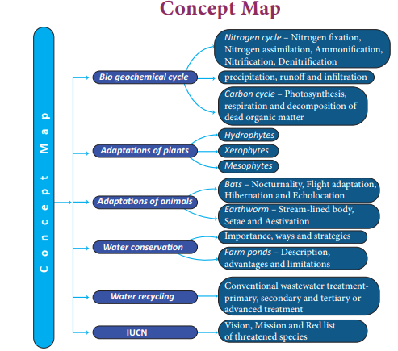

1. Choose the correct answer.
1. All the factors of biosphere which affect the ability of organisms to survive and reproduce are called as dash
a. biological factors b. abiotic factors c. biotic factors d. physical factors
2. The ice sheets from the north and south poles and the icecaps on the mountains, get converted into water vapour through the process of dash
a. evaporation b. condensation c. sublimation d. infiltration
3. The atmospheric carbon dioxide enters into the plants through the process of dash
a. photosynthesis b. assimilation c. respiration d. decomposition
4. Increased amount of dash in the atmosphere, results in greenhouse effect and global warming
a. carbon monoxide b. sulphur dioxide c. nitrogen dioxide d. carbon dioxide
Microorganism |
Role Played |
Nitrosomonas |
Nitrogen fixation |
Azotobacter |
Ammonification |
Pseudomonas species |
Nitrification |
Putrefying bacteria |
Denitrification |
1. Nitrogen is a greenhouse gas.
2. Poorly developed root is an adaptation of mesophytes.
3. Bats are the only mammals that can fly.
4. Earthworms use the remarkable high frequency system called echoes.
5. Aestivation is an adaptation to overcome cold condition.
1. Roots grow very deep and reach the layers where water is available. Which type of plants develops the above adaptation question mark Why question mark
2. Why streamlined bodies and presence of setae is considered as adaptations of earthworm question mark
3. Echolocation is the adaptation of bats. Is this correct question mark
1. What are the two factors of biosphere question mark
2. How do human activities affect nitrogen cycle question mark
3. What is adaptation question mark
4. What are the challenges faced by hydrophytes in their habitat question mark
5. Why is it important to conserve water question mark
6. List some of the ways in which you could save water in your home and school.
7. What are the uses of recycled water question mark
8. What is IUCN question mark What is the vision of IUCN question mark
1. Describe the processes involved in the water cycle.
2. Explain carbon cycle with the help of a flow chart.
3. List out the adaptations of xerophytes.
4. How does a bat adapt itself to its habitat question mark
5. What is water recycling question mark Explain the conventional wastewater recycling treatment methods.
1. Shukla R.S and Chandel. P.S. A textbook of Plant Ecology including Ethnobotany and Soil Science.
2. Verma, P.S and Agarwal. V.K. Environmental Biology, S.Chand and Company, New Delhi.
3. Kotpal R.L Zoology- Phylum - Annelida – Rastogi Publications, Meerut.
www.sciencelearn.org
concept map

ICT CORNER Environmental Science
Steps
Type the given URL to reach “The Carbon Cycle” simulation page.
Press “Run Decade” button to observe the carbon cycle accumulating every 10 years.
Select “Curb Emission” from “lesson” tab and adjust the simulation parameters to
watch the effect of cycle.
Select “Feedback Effects” from “lesson” tab and run the cycle and analyze the carbon
accumulation result.
Carbon cycle
URL: https://www.learner.org/courses/envsci/interactives/carbon/carbon.html or Scan the QR Code.